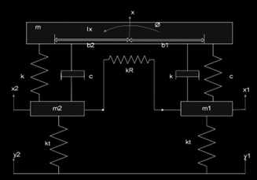
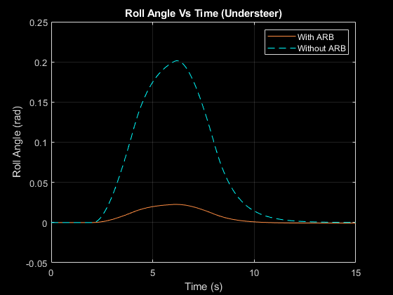
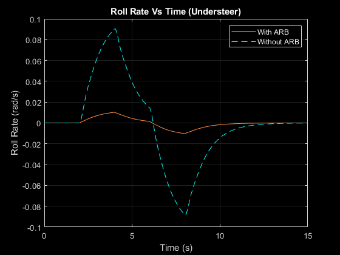

This project aims to develop and implement an active anti-roll bar (ARB) mechanism to enhance vehicle stability and handling. The system dynamically adjusts the ARB stiffness based on road dynamics, effectively mitigating body roll during cornering to improve vehicle safety and performance. Mathematical modelling of the active ARB system is undertaken, considering inputs from lateral acceleration, steering angle, and vehicle speed. The control algorithm is integrated into Simulink to intelligently manage the ARB stiffness in response to understeer and oversteer scenarios, preserving better tire contact with the road.
The active ARB is incorporated into the 4DOF models to investigate its impact on vehicle handling during understeer and oversteer scenarios. Simulations conducted using Simulink reveal that vehicles equipped with the active ARB exhibit enhanced cornering stability and handling. The active ARB reduces body roll during severe manoeuvres, leading to improved tire contact with the pavement and enhanced grip.
Physical Model
A sway bar, referred to as an anti-roll bar, is a part of a vehicle's suspension system. Its main purpose is to connect the opposite sides (right and left) of the rear or front suspension. The sway bar is critical in decreasing the vehicle's body tilt or roll during rapid turns or cornering manoeuvres. It is often built of robust tubular steel and is intended to be highly durable and able to endure the forces encountered when driving. The physical model of the anti-roll bar is shown below.

4DOF Model of Vehicle
We must integrate the equations of motion for both models in order to create a four-degree-of-freedom (4DOF) vehicle dynamics model that combines the half-car model with the single-track model with roll dynamics. This combined model, which takes into account both body bounce and roll as well as the interaction between the left and right wheels, will give a more complete picture of a vehicle's behaviour.
The half-car model provides an understanding of the correlation between body bounce, body roll angle, left and right wheel hops, and road excitations. By combining the equations of motion for the half-car model with the single-track model, which includes roll dynamics, a comprehensive four-degree-of-freedom vehicle dynamic model is designed. The resulting model is as follows:
Body vertical acceleration:
\( \ddot{x} = \frac{-2c\dot{x}}{m} + \frac{c\dot{x}_1}{m} + \frac{c\dot{x}_2}{m} + \frac{c(b_1-b_2)}{m}\dot{\phi} - \frac{2kx}{m} + \frac{kx_1}{m} + \frac{kx_2}{m} - \frac{k(b_1-b_2)}{m}\phi \)
Left wheel vertical acceleration:
\( \ddot{x}_1 = \frac{kx}{m_1} - \frac{(k+k_t)}{m_1}x_1 + \frac{c\dot{x}}{m_1} - \frac{c\dot{x}_1}{m_1} + \frac{kb_1}{m_1}\phi + \frac{cb_1}{m_1}\dot{\phi} + \frac{k_t}{m_1}y_1 + F_f \)
Right wheel vertical acceleration:
\( \ddot{x}_2 = \frac{kx}{m_2} - \frac{(k+k_t)}{m_2}x_2 + \frac{c\dot{x}}{m_2} - \frac{c\dot{x}_2}{m_2} + \frac{kb_2}{m_2}\phi + \frac{cb_2}{m_2}\dot{\phi} + \frac{k_t}{m_2}y_2 - F_f \)
Roll acceleration of car body:
\( \ddot{\phi} = \frac{-(b_1-b_2)kx}{I_x} + \frac{b_1kx_1}{I_x} - \frac{b_2kx_2}{I_x} - \frac{c(b_1-b_2)}{I_x} + \frac{b_1c}{I_x} - \frac{b_2c}{I_x} - \frac{(b_1^2+b_2^2)k}{I_x}\phi - \frac{(b_1^2+b_2^2)c}{I_x}\dot{\phi} + eF_f \)
Results
The real time simulation of the vehicle under lance changing manevour which shows the rolling motion of the vehicle can be visualize from the below animation.

A dynamic simulation of the model would be required to acquire the results of the half-car model, including yaw angle, roll angle, roll rate, and trajectory, based on the input velocity and steering input. Over a particular time period, the simulation entails calculating the equations of motion for the half-car model with the provided inputs. The roll angle of the vehicle for the understeer with and without ARB system is shown below.
The technology may dramatically reduce roll rate by actively regulating the stiffness of the ARB, keeping the car more stable and enhancing handling during cornering. The roll rate of vehicle understeer is shown below.
Conclusions
In this study, we designed and implemented two vehicle dynamic models: a 2-degree-of-freedom (2DOF) bicycle model and a 4-degree-of-freedom (4DOF) half-vehicle model. We incorporated an active anti-roll bar (ARB) mechanism into 4DOF models to investigate its impact on vehicle handling during understeer and oversteer scenarios. The simulations were conducted using Simulink, allowing us to analyse the results comprehensively. In comparison to models without ARB, 4DOF half-vehicles with active ARB showed enhanced cornering stability and handling. In particular during severe manoeuvres, the active ARB dramatically decreased body roll, improving tire contact with the pavement and enhancing grip.